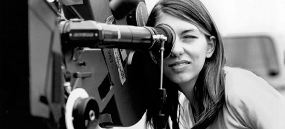
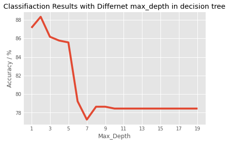

Overview
The model analyzed in this card uses characteristics about a movie to predict whether a movie passes the Bechdel test. In short, the Bechdel test is a set of questions that can be asked about a form of media to measure the representation of women. The model's goal is to offer another method of using the Bechdel test for discussions surrounding the representation of women in media. The model's goal is not to determine whether a form of media is “feminist” or not as this idea is unfaithful to the original goal of being a “cultural barometer” of female representation.
There are several versions of the Bechdel test, however, the version the data the model is trained on is relatively simple. The test essentially asks the following three questions.
- Does it have at least two [named] women in it?
- Do the women talk to each other?
- Do they talk about something besides a man?
On this page, you can learn more about the inner workings of the model as well as how effectively it performs.
Model Description
Input: Characteristics of a movie (ex. genres)
Output: Model's prediction on:
- Whether the movie would pass the Bechdel test
-
What the gross domestic and international profit would be if:
- The movie did pass the Bechdel test
- The movie did not pass the Bechdel test
Performance
The overall model performance is measured using the mean squared error. This error is calculated for both the data the model is trained on as well as the data the model is tested on. For the model, a sweet-spot is chosen to avoid overfitting or underfitting the data (see the trade offs section for details).
Limitations
Size of Dataset: this model was trained on a dataset consisting of 1794 observations, a relatively low sample size for machine learning models
Quality of Data: this dataset's observations consist of movies from the years 1970-2013 and thus may not accurately represent newer films
Crowd-Sourced Data: the data in this dataset was scraped from Bechdel Test Movie List, a website which relies on input from the public to classify movies
Trade-Offs
When developing machine learning models, there is a Goldilocks zone that is aimed for. This Goldilocks zone is a trade-off between bias and variance or overfitting and underfitting. Essentially, the model is built with the idea that it should not work so well on the data it is trained on so that it is useless in real world scenarios but it should also not be so varied that it fails to accurately classify the data it trained on. Using performance metrics, a balance was struck between these two concepts in an effort to create a model capable of accurately classifying the data it trained on while remaining useful in new scenarios.
Performance
This model uses mean squared error (MSE) as its performance metric. MSE is a calculation derived from finding the difference between the model's predictions and the actual results, squaring this value, and then calculating the mean of these squares. This metric is then used to compare the effects of changing different hyperparameters of the decision tree such as the max tree depth of the max number of features.
Test The Model
[ Here users would be able to change different inputs to see how it would change the model's output ]